ԱրմԷստեյտ
Անշարժ գույքի գործակալության գրասենյակ։ Այս ուղեցույցը ցույց է տալիս ամեն քայլը՝ գույքից մինչև գործակալի վճարումը, իսկական էկրաններով։
Բացվում է ցուցադրական տվյալներով — կարող եք ամեն ինչ սեղմել առանց վախի։
Ուղեցույցը հետևում է մեկ գործարքի՝ գույքը գրանցելուց մինչև գործակալի վճարումը։ Ամեն բաժինը կարելի է կարդալ առանձին։ Բոլոր նկարներն արված են աշխատող ծրագրից՝ ցուցադրական տվյալներով, ուստի կարող եք բացել ծրագիրը կողքից և կրկնել քայլերը։
Ներքևի գիծը ցույց է տալիս այնքան էկրան, որքան տեղավորվում է հեռախոսի լայնության մեջ. մնացածը՝ «Ավելին» կոճակի տակ։ Նեղ էկրանին գիծը կարող է կարճացնել անունը՝ «Գործարք», «Վճարում». էկրանի վերնագիրը մնում է լրիվ։ Կարմիր թիվը կոճակի վրա այն է, ինչ սպասում է ձեզ։
«Ավելին» թերթիկը կրում է մնացած բաժինները, իսկ գծից ներքև՝ ծրագրից դուրս տանող երկու հղում. «Ի՞նչ է սա» և «Բոլոր ծրագրերը»։ Դրանք հղումներ են, ոչ թե բաժիններ — դրա համար էլ առանձին են։
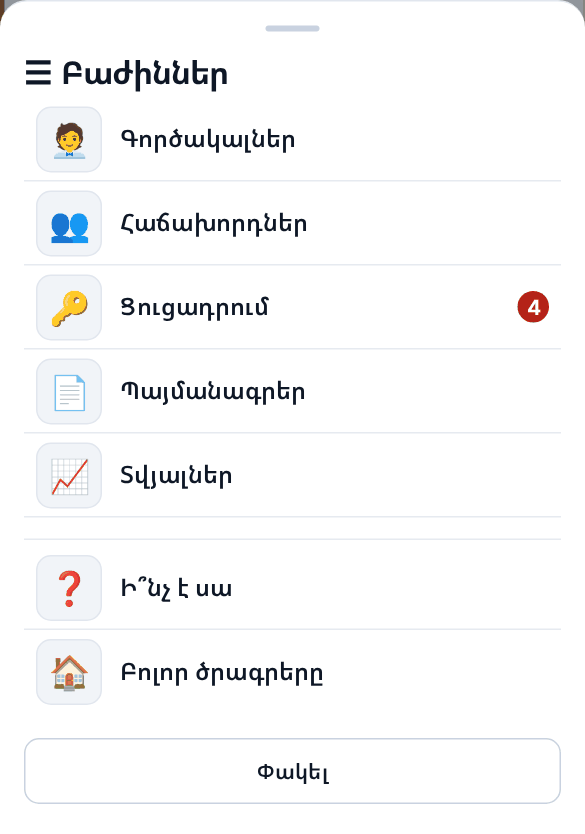
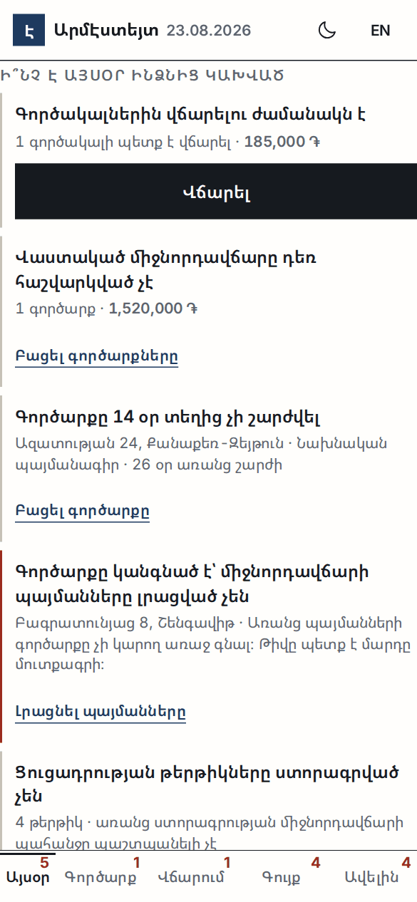
Գույք → «Նոր գույք»։ Ձևը լրացվում է վերևից ներքև՝ տեսակ, վաճառք թե վարձակալություն, վարչական շրջան, հասցե։
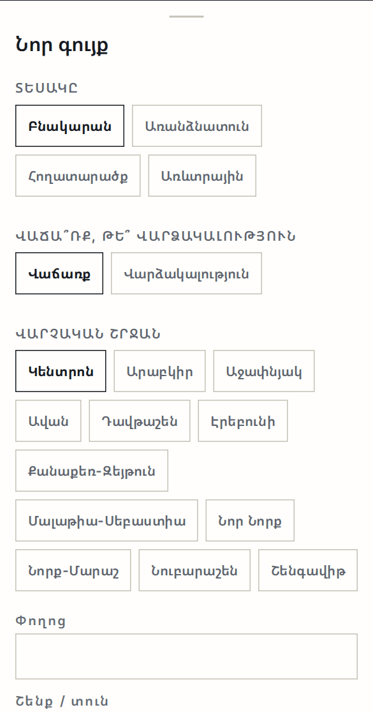
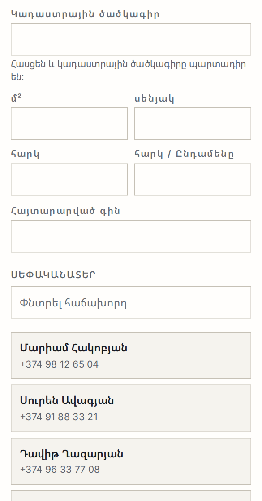
Կադաստրային ծածկագիրը գույքի բնական բանալին է. հենց այն է գրված պայմանագրում, վկայականում և կադաստրի տեղեկանքում։ Հասցեն կարող է երկու ձևով գրվել, ծածկագիրը՝ ոչ։ Ծրագիրը կրկնվող ծածկագիրը նշում է հենց դաշտի տակ, երբ մուտքագրում եք — ոչ թե ամբողջ ձևը լրացնելուց հետո։
Գույքի ցանկը ցույց է տալիս, թե ամեն գույք քանի օր է շուկայում, և նշում է այն գույքը, որի համար պայմանագիր չկա։ Բացառիկ պայմանագրով գույքի վրա մնացած օրերն են։
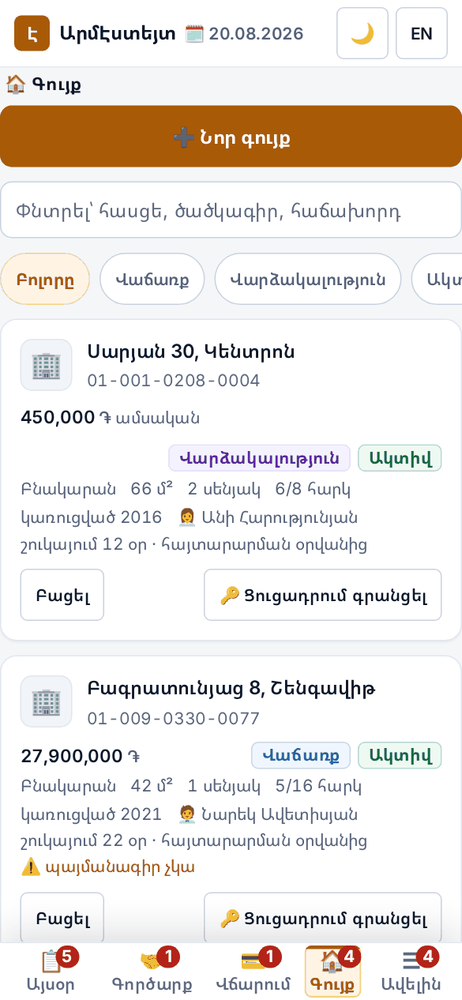
Հաճախորդներ → «Նոր հաճախորդ»։ Անուն, հեռախոս, ՀՎՀՀ, դեր և գործակալ։
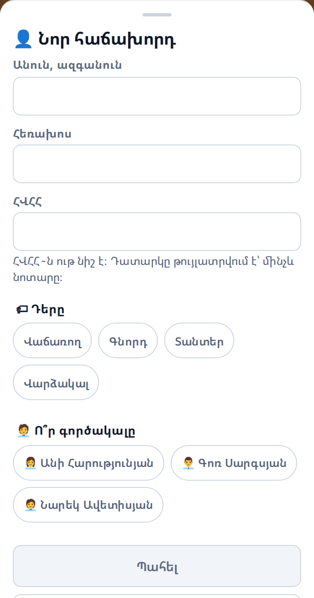
Դերը չորսից մեկն է՝ վաճառող, գնորդ, տանտեր, վարձակալ։ Մեկ մարդ կարող է կրել մեկից ավելի դեր — ցուցադրական տվյալներում Դավիթ Ղազարյանը և՛ գնորդ է, և՛ վաճառող։
Հեռախոսի ձևաչափը չի ստուգվում։ Հայկական համարի ձևը հավաստի աղբյուրով չհաստատվեց, իսկ «+»-ը և բացատները օրինական են, ուստի ծրագիրը ոչինչ չի պնդում, փոխանակ գուշակի։
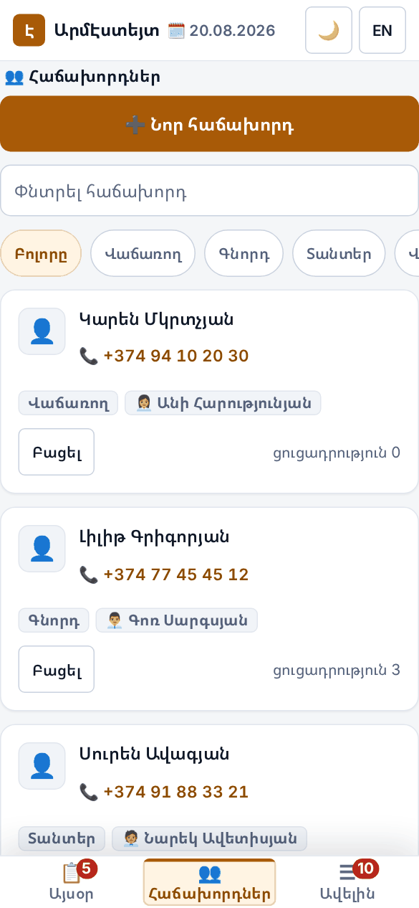
Ցուցադրում → «Ցուցադրում գրանցել»։ Ընտրեք գույքը, հաճախորդին և գործակալին, ապա նշեք, թե ինչ եղավ։
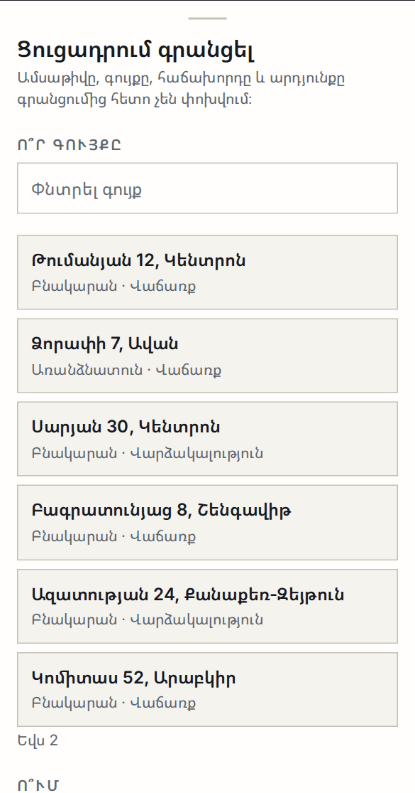
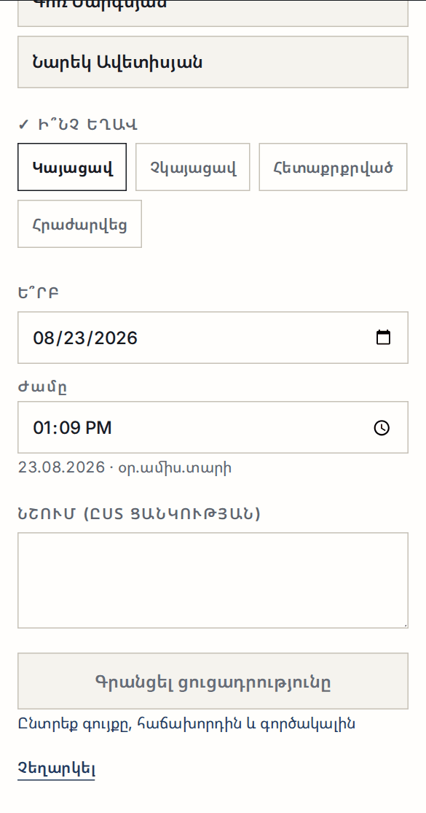
Երևանյան գործակալությունների հրապարակած պայմանների համաձայն՝ միջնորդավճարը հասնում է այն գույքի համար, որը հաճախորդը տեսել է այդ գործակալության հետ և ապա գնել։ Ուրեմն վճարը հիմնավորող դեպքը ցուցադրությունն է, ոչ թե հայտարարությունը։ Գրասենյակ, որը չի կարող ապացուցել «այս հաճախորդն այս գույքը տեսել է այս գործակալի հետ այս օրը», չի կարող պաշտպանել իր պահանջը։
Ամսաթիվը, գույքը, հաճախորդը և արդյունքը գրանցումից հետո չեն փոխվում։ Ապացույցը, որը հետո կարելի է խմբագրել, ապացույց չէ։
Ամեն ցուցադրություն ունի իր թերթիկը՝ առանձին համարով։ Այն տպվում է երկու օրինակից և ստորագրվում հաճախորդի ու գործակալի կողմից։ Ցանկը հատուկ նշում է չստորագրված թերթիկները, իսկ «Այսօր» էկրանը դրանք հաշվում է։
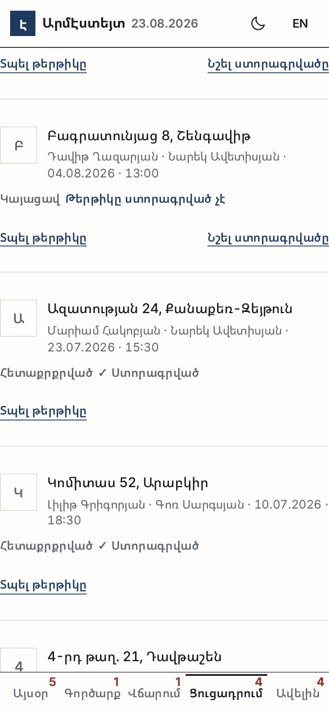
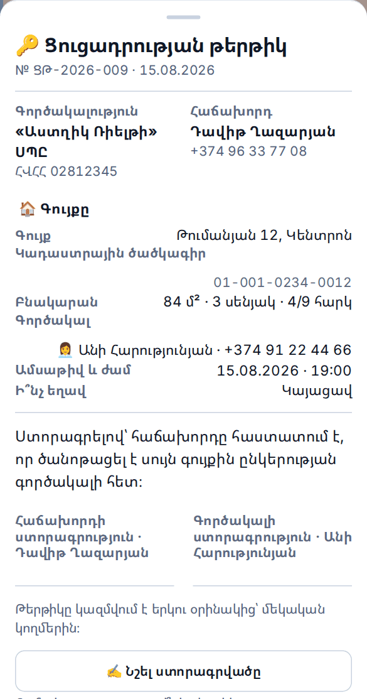
Պայմանագրեր → «Նոր պայմանագիր»։ Սա ծառայությունների մատուցման պայմանագիրն է հաճախորդի հետ — ոչ թե առուվաճառքի պայմանագիրը, որը կնքվում է նոտարի մոտ։
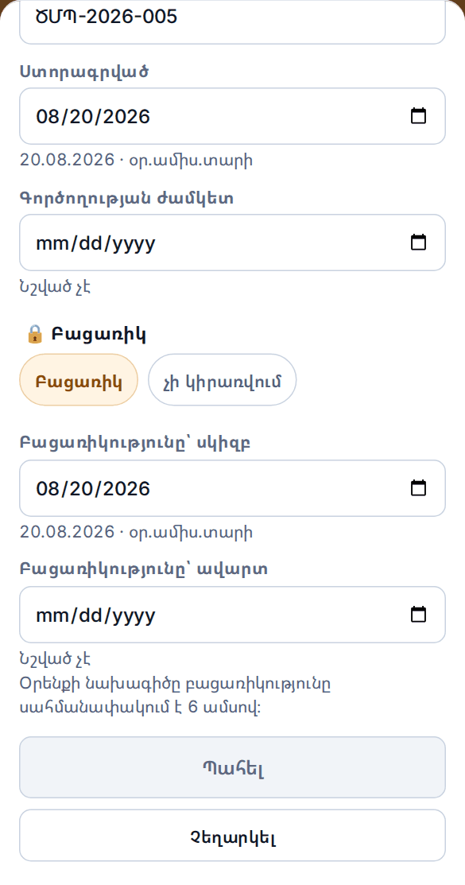
Պայմանագրերի ցանկը ցույց է տալիս մնացած օրերը բացառիկության վրա, տասնամյա պահպանման ժամկետը և պետական հարթակի տողը։ Ամեն պայմանագիր տպվում է։
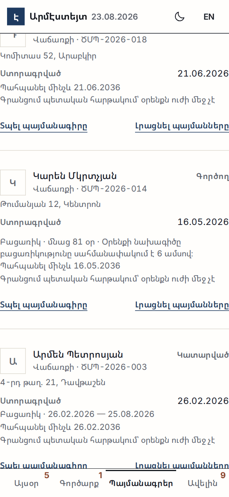
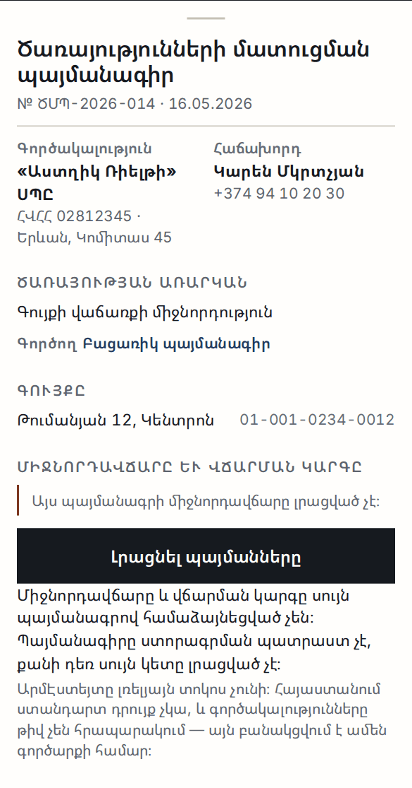
Սա ամբողջ ծրագրի ամենակարևոր ձևն է։ Բացվում է գործարքի կարտից՝ «Լրացնել պայմանները», կամ «Այսօր» էկրանի նույն կոճակից։
Ձևը բացվում է դատարկ։ Ոչ մի կոճակ ընտրված չէ, ոչ մի թիվ գրված չէ։
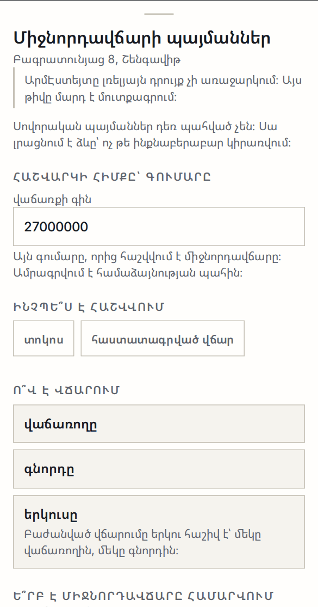
Հայաստանում միջնորդավճարի ստանդարտ դրույք չկա։ Ստուգվեցին ամենաշատ այցելվող գործակալությունների ծառայությունների էջերը — ոչ մեկը թիվ չի հրապարակում։ Երրորդ կողմի ուղեցույցներում հանդիպում է 1–3%, ամենից հաճախ մոտ 2%, բայց դրանք միմյանց չեն համընկնում։ Այդ լռությունն ինքնին պատասխան է. թիվը բանակցվում է ամեն գործարքի համար, առանձին։
Կա մեկ բացառություն, և այն անուն ունի. «Պահել որպես սովորական պայմաններ» կոճակը հիշում է ձեր սովորական պայմանները։ Հաջորդ գործարքի ձևում հայտնվում է կոճակ, որը դրանք լրացնում է — չի կիրառում ինքնաբերաբար։ Տակը գրված է, թե ով և երբ է դրանք պահել։
Առաջին դաշտն այն գումարն է, որից հաշվվում է միջնորդավճարը. վաճառքի դեպքում՝ վաճառքի գինը, վարձակալության դեպքում՝ ամսական վարձավճարը։ Այն կարող է չհամընկնել հայտարարված գնի հետ, և հենց դա է իմաստը՝ ամրագրվում է համաձայնության պահին։
Ուշադրություն մեկ դեպքի վրա. «2 5»-ը մերժվում է։ Գնի դաշտում բացատը խմբագրում է — 1 500 000-ը մեկուկես միլիոն է։ Դրույքի դաշտում խմբեր չկան, որովհետև դրույքը փոքր թիվ է. ուստի ներսի բացատը վրիպակ է։ Այն հանելով «2 5»-ը կկարդացվեր որպես 25% — տասն անգամ ավելի, քան մուտքագրողի նկատի ունեցած 2.5%-ը։ Սկզբի և վերջի բացատը դեռ թույլատրելի է։
Երեք հնարավորություն՝ վաճառողը, գնորդը կամ երկուսը։ Վարձակալության դեպքում նույն կոճակները կարդում են տանտերը և վարձակալը։ Հայաստանում որևէ մեկը նորմ չէ. մի աղբյուր գրում է «մոտ 2% ամեն կողմից», մյուսը հրաժարվում է ասել — ուստի սա գործարքի դաշտ է, ոչ թե կարգավորում։
«Երկուսը» ընտրելիս հայտնվում է երկու տոկոսի դաշտ։ Երկուսը միասին պետք է լինի ուղիղ 100%։ 50 և 30 գրելիս ծրագիրը մերժում է և անվանում է թիվը՝ «Այս պահին՝ 80%»։
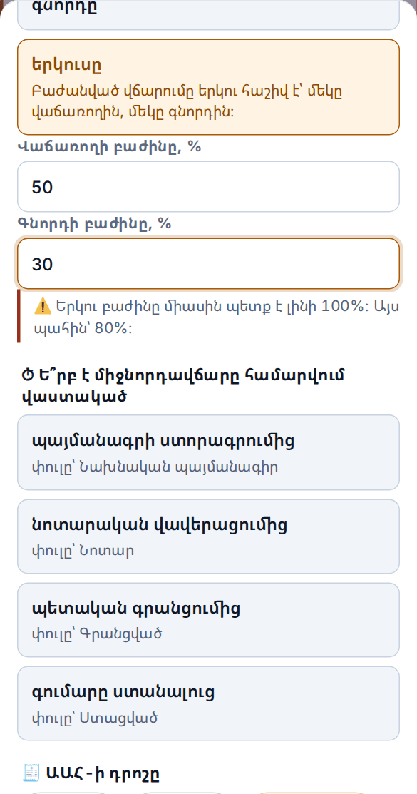
Չորս ընտրություն, և ամեն մեկի տակ գրված է, թե որ փուլն է այն միացնում. պայմանագրի ստորագրումից (Նախնական պայմանագիր), նոտարական վավերացումից (Նոտար), պետական գրանցումից (Գրանցված), գումարը ստանալուց (Ստացված)։ Վարձակալության դեպքում պետական գրանցումն առաջարկվում է — վարձակալությունն այդ փուլով չի անցնում։
Ոչ մեկը նորմ չէ։ Օրենքի նախագծի սեփական ցանկը երեքն էլ թվարկում է որպես համաձայնեցվող տարբերակներ — ուստի ընտրությունը գործակալության որոշումն է, և ծրագիրը միշտ գրում է, թե որ դեպքն է վաստակածը դարձրել վաստակած։
Երեք վիճակ՝ ներառյալ, չներառյալ, չի կիրառվում։ ԱրմԷստեյտը հարկ չի հաշվարկում — դրոշը գրանցվում է և տպվում փաստաթղթի վրա, որ հաշվապահը տեսնի, թե ինչի մասին է համաձայնությունը եղել։
Ձևի ներքևում ծրագիրը ցույց է տալիս, թե ինչ է ստացվում՝ միջնորդավճարը մեծ թվով, ով որքան է վճարում, ամեն գործակալի բաժինը դրամով և գործակալությանը մնացողը։ Ներքևում մեկ տող՝ բաժինների գումարը հավասար է միջնորդավճարին մինչև դրամ։
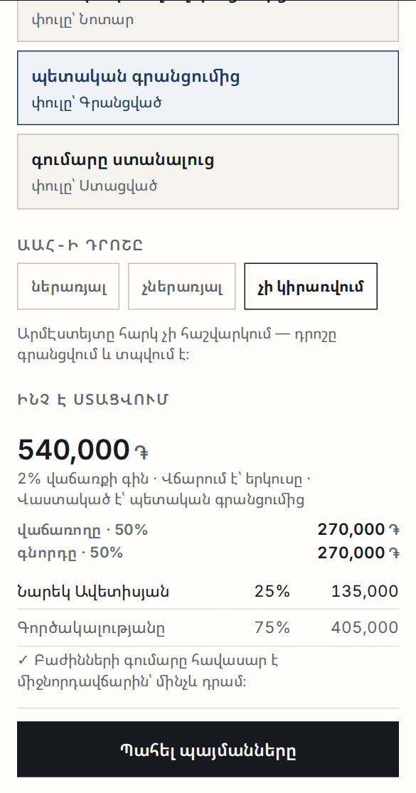
Կլորացումից մնացորդը չի կորչում և չի թաքնվում. այն տրվում է տեսանելի կերպով, և ամեն մասնիկը գումարվում է ամբողջին։ Ինքնաստուգումը դա ստուգում է 150 դրույք × գին համակցության վրա։
Գործարքն անցնում է յոթ փուլով, միշտ առաջ. Համաձայնեցված → Նախնական պայմանագիր → Նոտար → Գրանցված → Հաշվարկված → Ստացված → Վճարված։ Առաջին չորսը գործարքի իրական քայլերն են, վերջին երեքը՝ գործակալության սեփական փողի ճանապարհը։
Գործարքի կարտի վերևում գիծն է. լցված հատվածներն անցած փուլերն են։ Տակը՝ երեք գրառում. փուլը, տեսակը և փողի վիճակը։ Դրանք բառեր են, ոչ թե գունավոր պիտակներ։
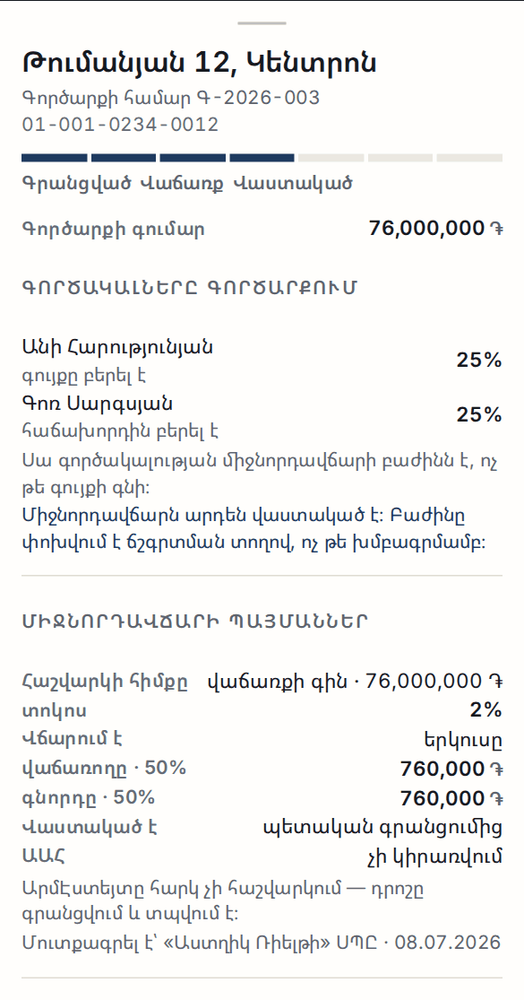
Առաջ տանելու կոճակը գործարքի ցանկում է՝ «Նշել՝ Նոտար», «Նշել՝ Հաշվարկված» և այլն։ Այն միշտ անվանում է հաջորդ փուլը, ոչ թե ընդհանուր «առաջ»։
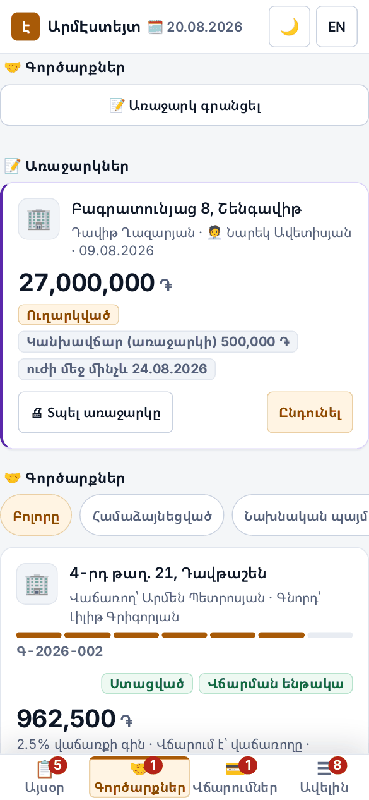
Եթե միջնորդավճարի պայմանները լրացված չեն, կարտի վրա թիվ չկա — ոչ «0 ֏», ոչ գնահատական։ Թվի տեղում գրված է՝ «Պայմանները լրացված չեն», և կոճակ կա, որը տանում է դեպի ձևը։ Կանգնած գործարքը հայտնվում է նաև «Այսօր» էկրանին։
Փուլերի փոփոխությունը երբեք չի ջնջում նախորդը. ամեն քայլ մատյանում առանձին տող է՝ իր ամսաթվով։ Ամփոփաթերթի վրա այդ ամսաթվերը տպվում են որպես ժամանակագրություն։
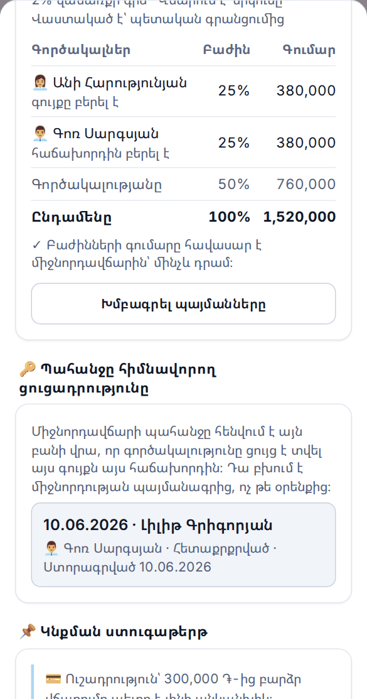
Գործարքի կարտի ներքևում է կնքման ստուգաթերթը՝ համաձայնություններ, միասնական տեղեկանք, նոտար, վկայական, նախավճար։ Այնտեղ է նաև հիշեցումը, որ 300,000 ֏-ից բարձր վճարումը պետք է լինի անկանխիկ, և պետական գրանցման ժամկետի հաշվիչը՝ աշխատանքային օրերով։
«Վճարված» փուլը հատուկ է. այն նշանակում է, որ գործարքի բոլոր գործակալները ստացել են իրենց մասը։ Եթե մնացորդ կա, ծրագիրը փուլը չի տալիս և գրում է, թե որքան է մնացել։
Գործարքը կարող է քանդվել ցանկացած փուլում՝ գնորդի հիփոթեքը մերժվում է, վաճառողը հրաժարվում է։ Գործարքի կարտի ներքևում է «✕ Նշել տապալված» կոճակը։
Գործարքը չի ջնջվում։ Փուլը մնում է այնտեղ, որտեղ հասել էր, պատճառը գրանցվում է, և արդեն վաստակած միջնորդավճարը հետ է շրջվում առանձին տողով — հին տողը մնում է անփոփոխ։
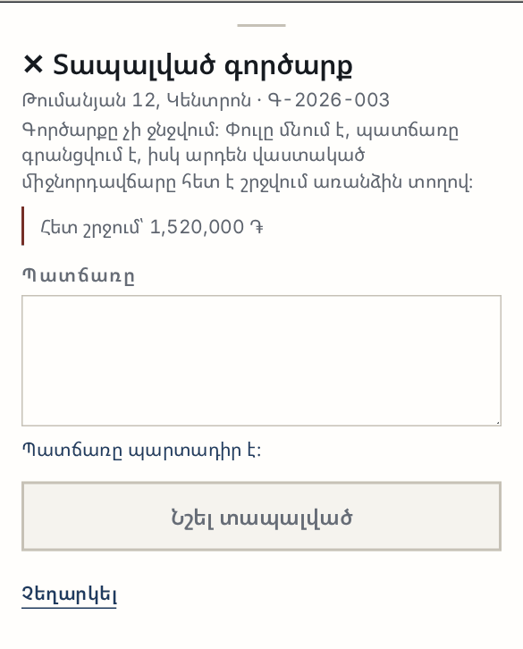
Պատճառը պարտադիր է։ Կոճակը փակ է, քանի դեռ չեք գրել այն։ Ձևը նախապես ցույց է տալիս, թե որքան կհետ շրջվի, որ դա անակնկալ չլինի։
Տապալված գործարքի կարտի վրա մնում է կարմիր տողը՝ պատճառը և ամսաթիվը։ Այն այլևս առաջ չի գնում, և պայմանների կոճակը անջատված է՝ պատճառը գրված — ոչ թե սեղմելի կոճակ, որը հետո մերժում է սեղմումը։
«Վճարումներ» էկրանը սկսվում է հինգ թվով, և դրանք իրար չեն գումարվում. Վճարման ենթակա, Սպասվող, Վաստակած, Վճարված և Պարտք։
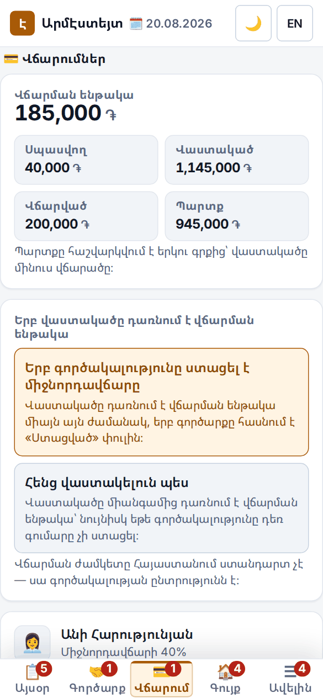
Էկրանի վերևում երկու կոճակ է. վաստակածը դառնում է վճարման ենթակա երբ գործակալությունը ստացել է միջնորդավճարը, կամ հենց վաստակելուն պես։ Վճարման ժամկետը Հայաստանում ստանդարտ չէ — սա գործակալության ընտրությունն է, և ծրագիրը դա գրում է կոճակների տակ։
Սեղմեք «Վճարել» գործակալի կարտի վրա։ Գումարն արդեն լրացված է վճարման ենթակայով, բայց այն կարելի է իջեցնել՝ մասնակի վճարումը սովորական է։ «Ամբողջը» և «Կեսը» կոճակները արագ ճանապարհ են։
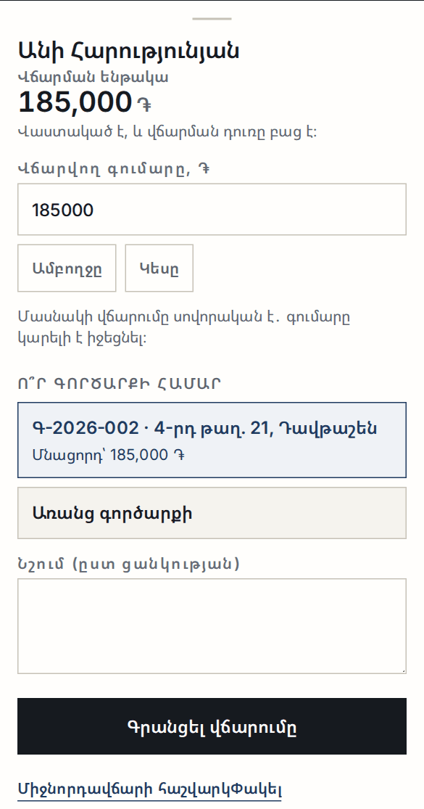
Ընտրեք, թե որ գործարքի համար է վճարումը, կամ «Առանց գործարքի»։ Այդ ընտրությունը հայտնվում է քաղվածքի վրա որպես տողի հիմնավորում — առանց դրա գործակալը հետո չի իմանա, թե ինչի համար է ստացել գումարը։
Գումարը մուտքագրվում է նույն կանոնով, ինչ ամեն դրամ այս ծրագրում. 200 000 ընդունվում է, տառը՝ ոչ։ Վճարման ենթակայից բարձր գումարը մերժվում է, և պատճառը հենց դա է գրվում։
Ամեն գործակալ ունի մշտական բաժին՝ միջնորդավճարի տոկոսը, ոչ թե գույքի գնի։ Այն սերմանվում է գործարքի մեջ և այնտեղ սառեցվում։ Բաժնի փոփոխությունը գործում է հաջորդ գործարքից — ընթացիկների վրա ոչ։
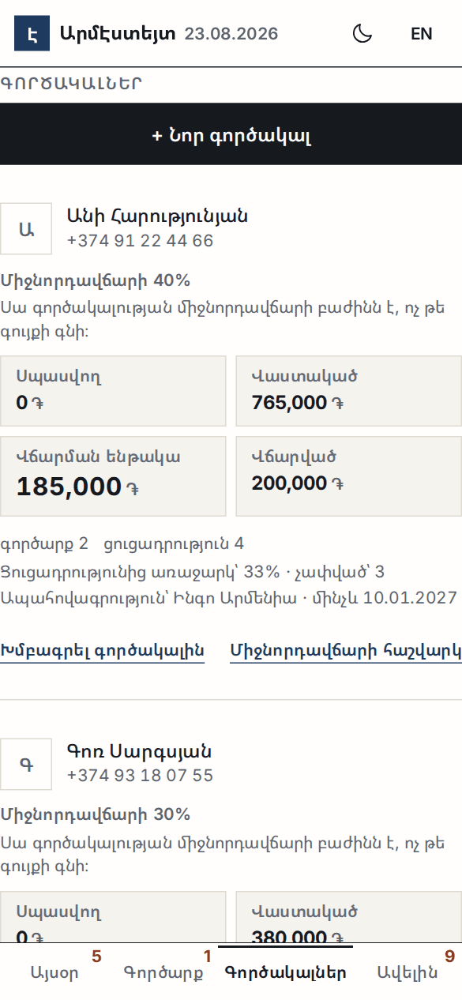
Նույնը վերաբերում է պայմաններին. արդեն վաստակած գործարքի դրույքը փոխելիս պահելու կոճակը կարդում է «Պահել և գրել ճշգրտումը», և ձևը նախապես ցույց է տալիս, թե ամեն գործակալի մոտ ինչ տարբերություն կգրվի։
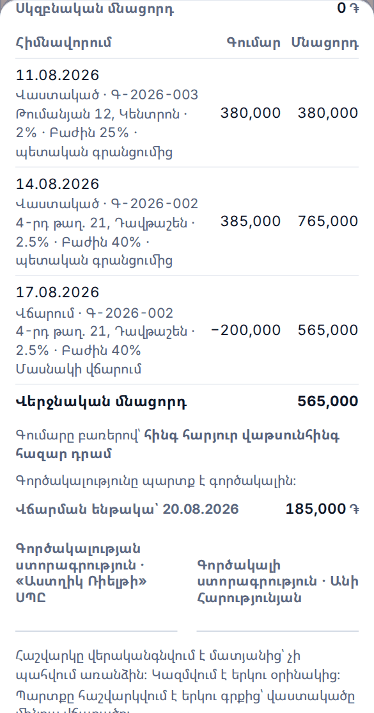
Ծրագիրը տպում է հինգ փաստաթուղթ, բոլորն էլ հեռախոսից՝ առանց լրացուցիչ ծրագրի։ Ամեն մեկը կրում է իր համարը, երկու կողմը ՀՎՀՀ-ով, ամսաթիվը, գումարը բառերով՝ հայերեն և ստորագրության տողերը։ Գումարը բառերով միշտ հայերեն է — նույնիսկ երբ ինտերֆեյսը անգլերեն կամ ռուսերեն է, որովհետև փաստաթուղթը ստորագրվում է հայերեն։
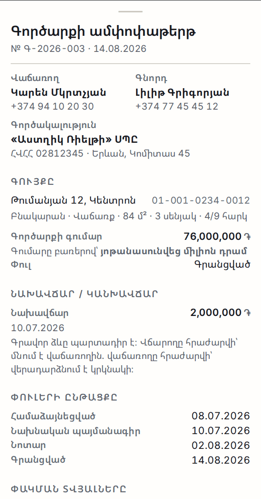
Ամփոփաթերթը տպում է մատյանի բաժինը նույնիսկ երբ այնտեղ ոչինչ չկա — զրոյով և մեկ նախադասությամբ, որ գումարը սպասվող է, ոչ թե վաստակած։ Առանց դրա գործարքի թուղթը կթողներ այն տպավորությունը, թե միջնորդավճարն արդեն վաստակած է։
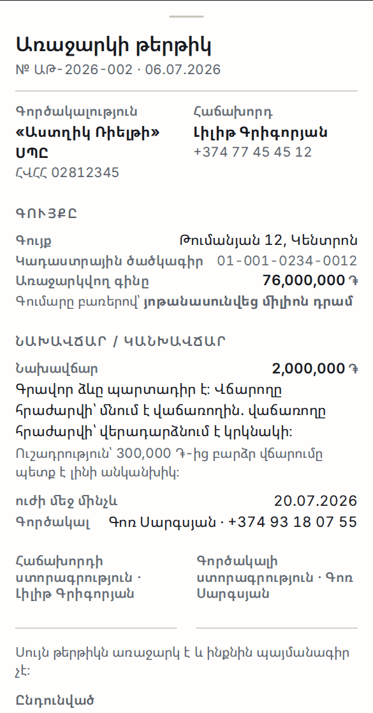
Քաղվածքի վրա ամեն տողի ամսաթիվը, հիմնավորումը և գումարը մնում են միասին նույնիսկ էջի սահմանին։ Աղյուսակի վերնագիրը կրկնվում է ամեն էջում։ Սա մանրուք չէ. գործակալի ստորագրած թղթի վրա առանց հիմնավորման կախված թիվն այն տողն է, որի շուրջ վեճ է ծագում։
Ծրագիրը դեռ կառուցվում է, և ամենամեծ բացը մեկն է։
Մի քանի հայերեն բառ դեռ պետք է հաստատի աշխատող գործակալը — «ցուցադրություն», «բացառիկ պայմանագիր», «առաջարկ» որպես փուլ, «ամփոփաթերթ»։ Դրանք ընտրված են աղբյուրներից, բայց շուկայի պրակտիկայով հաստատված չեն, և ոչ մի հայերեն բառ այս ծրագրում հորինված չէ։
Ամեն շարժ գրվում է մեկ մատյանում, որից ոչինչ չի ջնջվում։ «Տվյալներ» էկրանը ցույց է տալիս, թե քանի գումարի տող կա և քանի ապացույցի տող, և ամեն բացումից ստուգում է, որ հաշվիչը համընկնում է մատյանի հետ։ Եթե չհամընկնեն, մատյանը հաղթում է, և ծրագիրը դա ասում է։
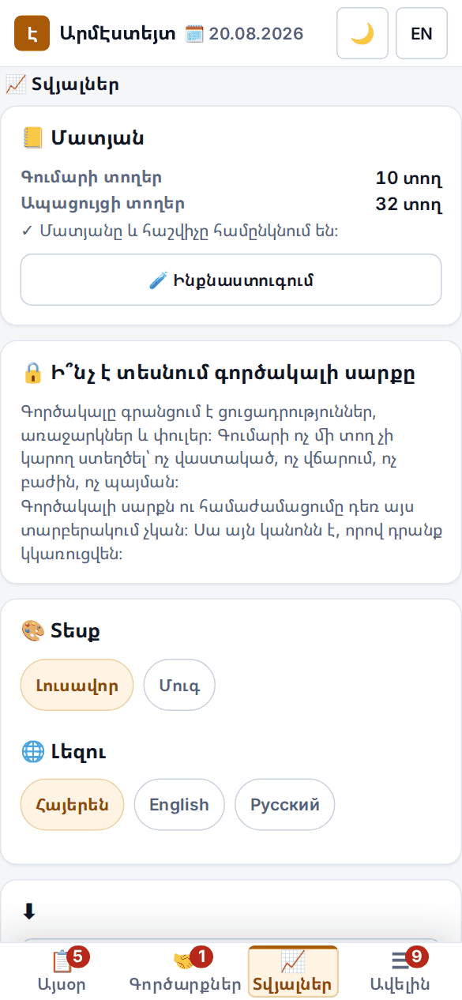
«Ինքնաստուգում» կոճակը ծրագրի սեփական փաստարկն է։ Այն ստուգում է 109 պնդում՝ մատյանի հանրահաշիվը, բաժինների ճշգրիտ գումարումը, ճշգրտումների վարքը, երեք լեզվի ամբողջականությունը, արտահանման անվտանգությունը։ Կարող եք սեղմել այն ցանկացած պահի։
Երեք արտահանում կա՝ միջնորդավճարի տողերը հաշվապահի համար, ցուցադրությունների մատյանը և ամբողջ մատյանը։ Ֆայլերը UTF-8 BOM-ով են, որ հաշվապահի Excel-ը հայերենը ճիշտ բացի, և պաշտպանված են բանաձևի ներարկումից։
«Ի՞նչ է տեսնում գործակալի սարքը» կարտը նկարագրում է այն կանոնը, որով համաժամացումը կկառուցվի. գործակալը գրանցում է ցուցադրություններ, առաջարկներ և փուլեր, բայց գումարի ոչ մի տող չի կարող ստեղծել։ Կարտն ինքն է գրում, որ այդ հատկությունը դեռ չկա — գաղտնիության խոստում չգոյություն ունեցող բանի մասին ծրագիրը չի տալիս։
Ցուցադրական տվյալները կարելի է վերաբեռնել ցանկացած պահի «Վերաբեռնել ցուցադրական տվյալները» կոճակով։ Դա փոխարինում է այս սարքի տվյալները, ուստի իսկական աշխատանքից հետո մի սեղմեք։
ԱրմԷստեյտը դեռ կառուցվում է։ Այս ուղեցույցը նկարագրում է 2026 թ. օգոստոսի 20-ի վիճակը։ Բոլոր նկարներն արված են աշխատող ծրագրից՝ 390 փիքսել լայնությամբ էկրանին, հայերենով։